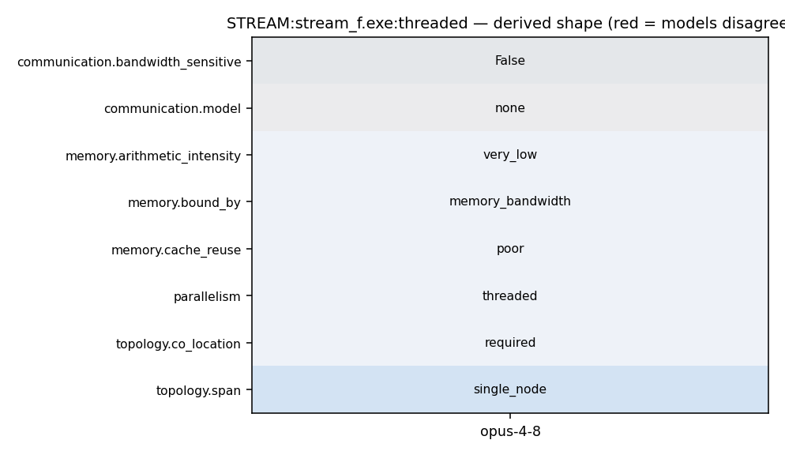

OMP_NUM_THREADS=N ./stream_f.exe
184 t = mysecond() 185 a(1) = a(1) + t 186 !$OMP PARALLEL DO 187 DO 30 j = 1,n 188 c(j) = a(j) 189 30 CONTINUE 190 t = mysecond() - t 191 c(n) = c(n) + t 192 times(1,k) = t 193 194 t = mysecond() 195 c(1) = c(1) + t 196 !$OMP PARALLEL DO 197 DO 40 j = 1,n 198 b(j) = scalar*c(j) 199 40 CONTINUE 200 t = mysecond() - t 201 b(n) = b(n) + t 202 times(2,k) = t 203 204 t = mysecond() 205 a(1) = a(1) + t 206 !$OMP PARALLEL DO 207 DO 50 j = 1,n
39 * simple computational kernels coded in FORTRAN. 40 * 41 * The intent is to demonstrate the extent to which ordinary user 42 * code can exploit the main memory bandwidth of the system under 43 * test. 44 *======================================================================= 45 * The STREAM web page is at: 46 * http://www.streambench.org
1 =============================================== 2 3 STREAM is the de facto industry standard benchmark 4 for measuring sustained memory bandwidth. 5 6 Documentation for STREAM is on the web at: 7 http://www.cs.virginia.edu/stream/ref.html
2 CFLAGS = -O2 -fopenmp 3 4 FC = gfortran 5 FFLAGS = -O2 -fopenmp 6 7 all: stream_f.exe stream_c.exe 8 9 stream_f.exe: stream.f mysecond.o 10 $(CC) $(CFLAGS) -c mysecond.c 11 $(FC) $(FFLAGS) -c stream.f 12 $(FC) $(FFLAGS) stream.o mysecond.o -o stream_f.exe 13 14 stream_c.exe: stream.c 15 $(CC) $(CFLAGS) stream.c -o stream_c.exe
158 PRINT *,'Printing one line per active thread....' 159 !$OMP END PARALLEL 160 161 !$OMP PARALLEL DO 162 DO 10 j = 1,n 163 a(j) = 2.0d0 164 b(j) = 0.5D0 165 c(j) = 0.0D0 166 10 CONTINUE 167 t = mysecond() 168 !$OMP PARALLEL DO 169 DO 20 j = 1,n 170 a(j) = 0.5d0*a(j) 171 20 CONTINUE 172 t = mysecond() - t 173 PRINT *,'----------------------------------------------------' 174 quantum = checktick() 175 WRITE (*,FMT=9000) 176 $ 'Your clock granularity/precision appears to be ',quantum, 177 $ ' microseconds' 178 PRINT *,'----------------------------------------------------' 179 180 * --- MAIN LOOP --- repeat test cases NTIMES times --- 181 scalar = 0.5d0*a(1)
433 suma = 0.0d0 434 sumb = 0.0d0 435 sumc = 0.0d0 436 !$OMP PARALLEL DO REDUCTION(+:suma,sumb,sumc) 437 DO 110 j = 2,n-1 438 suma = suma + a(j) 439 sumb = sumb + b(j)